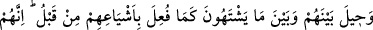
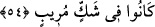
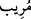

54. Artık, bundan önce benzerlerine yapıldığı gibi, kendileriyle arzu ettikleri şey
arasına perde çekilmiştir. Şüphesiz onlar, kendilerini endişeye düşüren bir korku
içindeydiler.
“Artık, bundan önce benzerlerine” onların benzeri olan geçmiş ümmetlerin
kâfirlerine “yapıldığı gibi, kendileriyle” bu kâfirlerle “arzu ettikleri şey” îmanın
fayda vermesi ve cehennemden kurtuluş “arasına perde çekilmiştir.” engel ve mâni
konulmuştur.
“Şüphesiz onlar,” yâni kâfirler dünyada tevhid, yeniden diriltilme (ba’s) ve günahta
ısrar edildiği takdirde azâbın inmesi gibi îman ve yakîn sâhibi olmanın lüzumlu olduğu
konularda “kendilerini tereddüde düşüren” töhmet altında bırakan, gönlü mustarip kılan
ve karıştıran “bir şüphe içindeydiler.”
Tefsir ehli der ki: “ onları şüphe ve tereddüde düşüren şey ya da şüphe sahibi/
şüpheci demektir. Bu iki mânâ da isnad bakımından mecazdır. Ancak aralarında küçük
bir fark vardır. Birincisi, şüpheye düşürmeye elverişli şahıs ve aynlardan mânâya
nakledilmiştir ki o şek/şüphedir. Yâni gerçekte şüpheye düşüren kimsenin sıfatı olur.
Âyette ise mânâlardan bir mânâ olan şüphenin kendisinin sıfatı yapılmıştır. İkincisi ise
şüphe sâhibinden şüpheye nakledilmiştir. Yâni onlar şüphe sâhibinin şüphesi
içindeydiler. Bu ‘şâirin şiiri’ demek gibidir. Aslında şâir, şiirin sâhibidir. Mübâlağa
için şâirlik şiirine isnâd edilmiştir.
Kâfirlerin dünyadaki hâli şüphe olunca, âhirette yakînin/şüphesiz îmanın onlara
faydası olmaz. Çünkü bu yakîn azâbı gördükten ve mükellefiyet yurdu olan dünyadan
çıktıktan sonra hâsıl olmuştur. Kâfirler bu âyetlerde şüphe, inkâr ve gayba atıp tutmakla
yerilmişlerdir. Öyleyse kişi bir şeyi ancak ya delil ile veya şâhidlik ile bilip anlamadan
inkâra kalkışmamalıdır.
el-Fütûhâtü’l-Mekkiyye’de der ki: “Bir kimsenin bir adamın mesela yoldaki bir
kadına baktığını gördüğünde hemen onu inkâra kalkması câiz değildir. Çünkü bu adam
bu kadınla evlenmeye niyetli veya tabip olabilir. Başka ihtimal bulunmayan durumlar
dışında reddetmeye kalkışmak gerekmez. Bu konuda günahkarların çoğu hatâ ederler.
Dindar kimseler ise böyle değildir. Çünkü dindar kimse ilk olarak kendi nefsi
konusunda ihtiyatlı hareket eder. Özellikle de red/inkâr konusunda. Hak Teâlâ bizi
insanlara sû-i zanna değil hüsn-i zanna teşvik etmiştir. Dindar kimse zan bulunan yerde
asla red ve inkârda bulunmaz. Çünkü o, zannın bir kısmının günah olduğunu (bk. el-
Hucurât 49/12) bilir ve “Belki bu o ‘bir kısım’dandır.” der. Bu günah olan zan gerçeğe